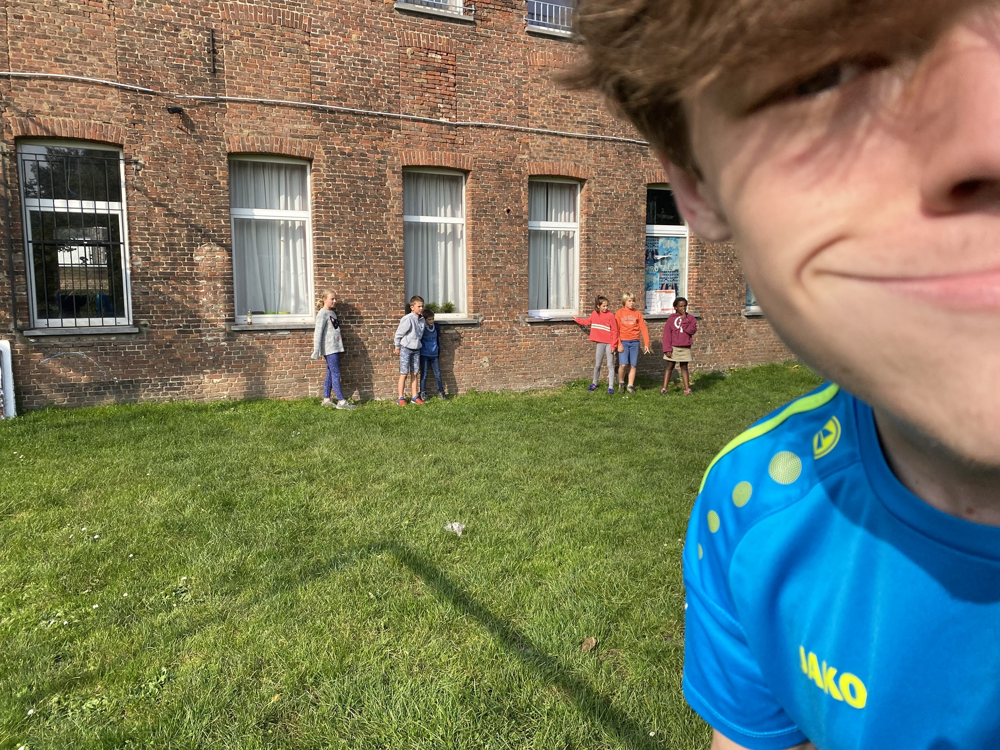

Eureka & Fantomas
Ik heb altijd al in de chiro gezeten,
of toch sinds ik erin mocht.
De minimum leeftijd bedraagt 6 jaar.
Mijn ouders hebben ook een lange chiroperiode achter de rug
en ze motiveerden mij van kleins af aan om ook te gaan.
Ik vond het altijd al super leuk en is een deel van mijn leven dat ik niet kan missen.
De naam "Eureka" is de jongenschiro.
"Fantomas" is dan van de meisjes.
Speelclub

Mauro, Mike en ik als Speelclub
Sloepi's (Sloebers & Pinkels)
Rakwi's (Rakkers & Kwiks)

Op kamp als eerstejaar Rakker

Op kamp als tweedejaar Rakker
Tito's (Toppers & Tippers)


Op kamp als tweedejaar topper
Keti's (Kerels & Tiptiens)


Tweede jaar kerel
Aspiranten

Tweede jaar Aspi
Leiding
Dit chirojaar ben ik dan in de leidingsploeg gestapt. Mijn tijd als "kadee" zit erop.

Ik, met mijn kadeeën in de achtergrond